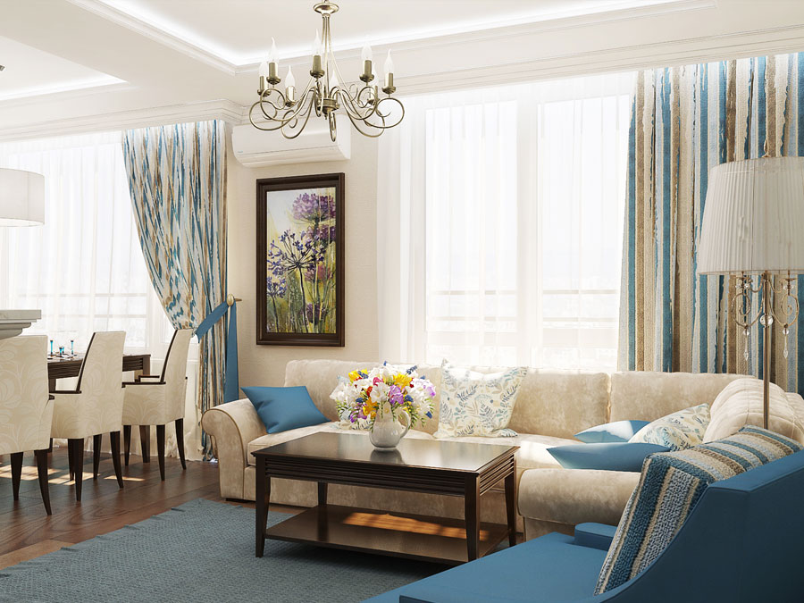
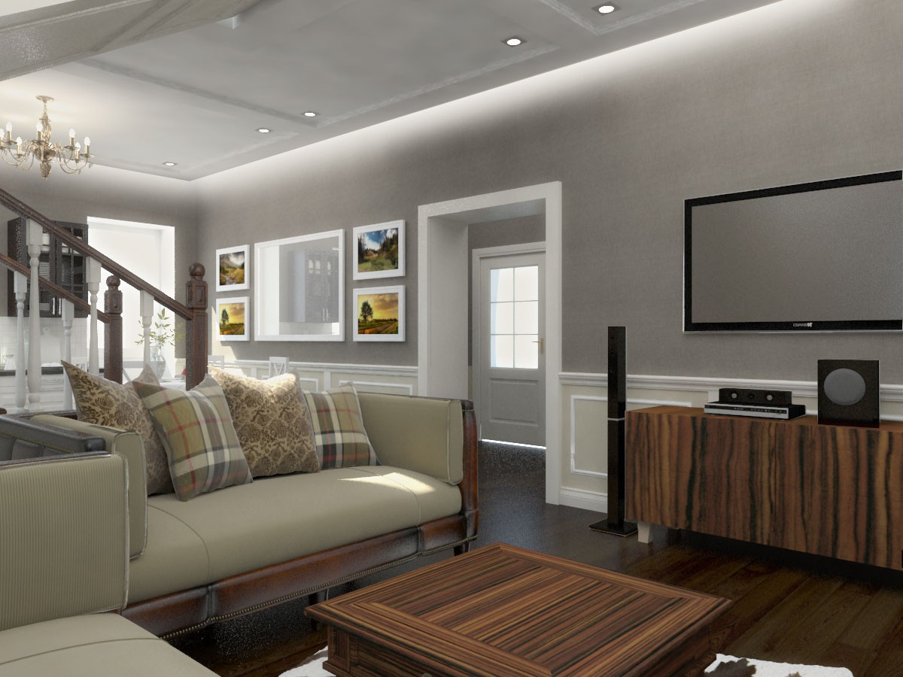
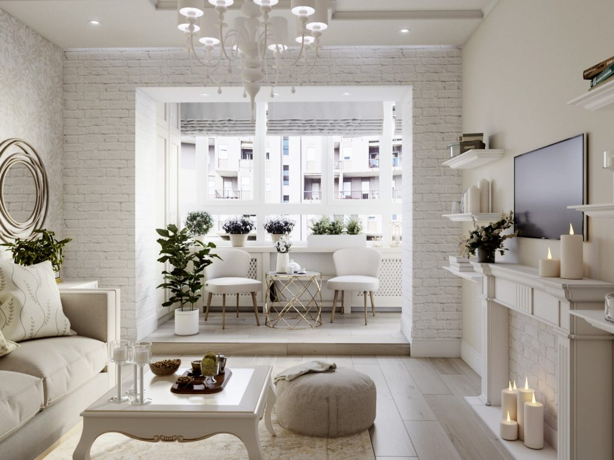

Американський стиль в інтер'єрі: втілення свободи в вашому домі
Американський стиль в інтер'єрі - це дизайн, особливостями якого є наявність великого простору за рахунок з'єднання кухні і вітальні, імітація дорожнечі за допомогою бюджетних матеріалів, зонування простору і велика кількість меблів.
Інтер'єр прекрасно відображає гостинний характер жителів Манхеттена. Перша асоціація з цим напрямком - вітальня з серіалу "Друзі". Простора кімната, де так багато часу проводили головні герої, служила одночасно кухнею, їдальнею і місцем для відпочинку. У такій вільної локації можна приготувати сніданок, покликати гостей на вечерю або з комфортом розташуватися на дивані біля телевізора.

Зміст:
- Дизайн квартири в американському стилі
- Залу в американському стилі
- Кухня в американському стилі: розділяй і оформлюй
- Будинок в американському стилі
- Спальня в американському стилі
- Ванна кімната в американському стилі
- Дитяча в американському стилі
- Передпокій в американському стилі
- Меблі в американському стилі
- Дизайн квартири в американському стилы


Квартира в американському стилі відрізняється відсутністю дверей і перегородок між передпокоєм, вітальнею, кухнею і їдальнею. Переходи між зонами можуть виділятися зниженням рівня підлоги. Закритими для вільного доступу залишаються спальні, ванна, кімната для гостей і дитяча. Щоб впоратися з оформленням житла, потрібно знати деякі тонкощі дизайн. Візуальне розширення простору за допомогою поділу його на зони. Кімнати відокремлюються одна від одної за допомогою функціональних перегородок;
Приміщення має порівняно невелику кількість аксесуарів. Практично повністю відсутні декоративні орнаменти в обробці;
Колірна гамма цього напрямку багатогранна, але найчастіше в інтер'єрі використовуються земляні кольору: від світло-бежевого до темно-коричневого і зеленого;
Інтер'єр кімнати в американському стилі передбачає висвітлення, яке допомагає розділити приміщення на зони. Центральний стельовий джерело світла встановлюють тільки в вітальні. В інших приміщеннях використовують комбіноване світло за допомогою безлічі ламп, бра і торшерів;
Сходи в американському стилі є невід'ємним предметом інтер'єру. Її можна дізнатися за простій конструкції і контрастною забарвленням ступенів і перегородок між ними;
Класичний американський стиль в інтер'єрі квартири допускає дощату підлогу, який фарбують у світло-сірий або коричневий колір. Також підлогу можна покрити ламінатом під натуральне дерево. Для більшого комфорту на підлогу стелять вовняний килимок світлого відтінку;
Інтер'єр має на увазі стіни, обклеєні шпалерами світлих відтінків з красивим орнаментом;
Меблі, в основному, з червоних порід дерева, з відсутністю обробки і декору. Іноді для більшого комфорту її оббивають барвистою різнокольоровою тканиною.
Вітальня в американському стилі